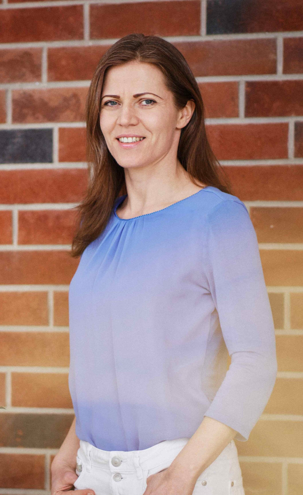

O mne
Som Jana Marková a Vitability som založila z túžby spájať zdravý pohyb, vedomý dych a ľudský prístup.
Po 17 rokoch v korporátnom prostredí som sa rozhodla venovať tomu, čo mi dáva najväčší zmysel – pomáhať ľuďom cítiť sa vo svojom tele istejšie a pohybovať sa vedomejšie.
Joge sa venujem od roku 2017, vlastné lekcie a workshopy vediem od roku 2023. Pracujem s jednotlivcami, skupinami, seniormi, komunitami aj firmami.

Ako pracujem
Nejde mi o výkon ani dokonalé pozície. Pohyb prispôsobujem možnostiam konkrétneho človeka tak, aby bol zrozumiteľný, bezpečný a príjemný.
Prepájam jemnú jogu, fyzio cvičenia, vedomý pohyb a dych s relaxáciou a všímavosťou.
Láskavosť. Rešpekt. Bezpečný pohyb. Jasné vedenie.
Prečo Vitability
Vitability je inšpirované vitalitou, odolnosťou a rastom.
Aj preto je súčasťou loga ginko – jeden z najstarších a mimoriadne odolných druhov stromov. Pre mňa je symbolom schopnosti prispôsobiť sa, regenerovať a ďalej rásť.
Vzdelanie
Inštruktorka jogovej terapie
Fakulta telesnej výchovy a športu UK & Európska jogová akadémia
DNS Sport I & II
Pražská škola rehabilitace
Jogová terapia fyziologicky
Emočná joga
Európska jogová akadémia
Lektorka vzdelávania dospelých
Asociácia lektorov a kariérnych poradcov
Skúsenosti
Lekcie a workshopy vediem pre verejnosť, firmy, seniorov a komunity.
Spolupracovala som s jogovými a športovými centrami, kúpeľmi a hotelmi, ako aj s organizáciami a firmami vrátane Orange Slovensko, Kronovision či Hotela Partizán.
Súčasťou mojej práce sú aj dobrovoľnícke aktivity pre miestne komunity a neziskové organizácie.
Chcete sa pridať?
Pozrite si aktuálne hodiny alebo sa mi ozvite a nájdeme vhodnú formu spolupráce.